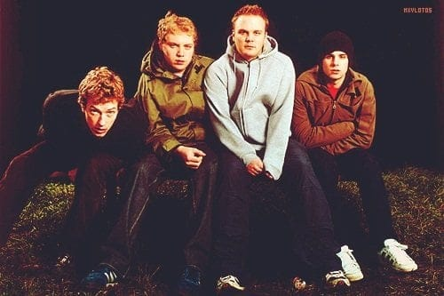

1996
Tudo começou em Londres
Chris Martin e Jonny Buckland se conheceram na faculdade, em Londres, e começaram a tocar juntos. Pouco depois, Guy Berryman e Will Champion se juntaram ao grupo, formando a banda que conhecemos hoje. Em 1998, o grupo adotou o nome Coldplay.